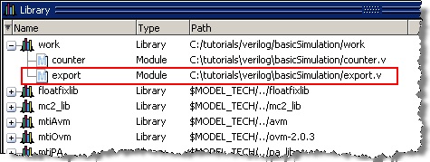
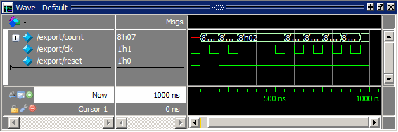

Earlier
in the lesson you exported the created waveforms to a test bench
file. In this exercise you will compile and load the test bench
and then run the simulation.
Procedure
- Compile
and load the test bench.
- At
the Questa SIM prompt,
enter “vlog export.v” (or “vcom export.vhd” if you are working with
VHDL files).
You
should see a design unit named export appear
in the work library (Figure 1).
Figure 1. The export Test Bench
Compiled into the work Library
- Enter
the following command at the Questa SIM>
prompt.
vsim -voptargs="+acc" export
- Add
waves and run the design.
- At
the VSIM> prompt, type “add wave *.”
- Next
type “run 1000.”
The
waveforms in the Wave window match those you saw in the last exercise (Figure 2).
Figure 2. Waves from Newly Created
Test Bench
- Quit
the simulation.
- At
the VSIM> prompt, type “quit -sim.” Click Yes to
confirm you want to quit simulating.